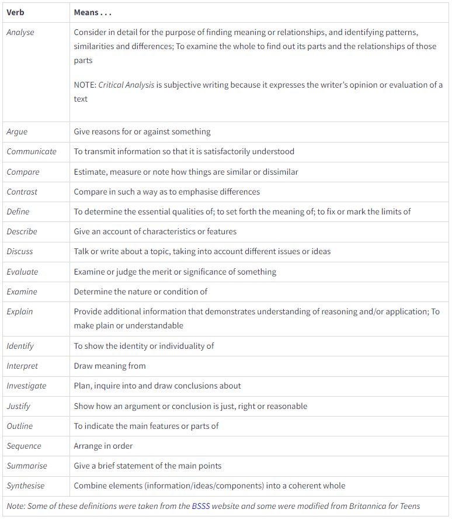

Module 1: Group Dynamics

A group of people sit around a laptop. The Sheridan logo is on the right-hand side.
1.1 Understanding Course Assignments
Estimated Completion Time for this Section: 30 minutes
Topics Covered in 1.1
1.1.1. Interpreting Assignment Instructions

A Quick Warning about this Course
This course has an asynchronous group project that is worth 40% of your final grade. You must be sure to attend and keep up with class work in order to be successful. If you have not joined a group by the end of Week 2, you will automatically be placed into a group by your professor.
To join a group, go to "Communication" on the homepage toolbar, and scroll down to "Discussions".
1.1.1. Interpreting Assignment Instructions
Alright then--let's get to work! The first thing we need to cover is how we deconstruct and "decode" post-secondary assignments. To do this, I would like to have a quick look at a generic sample assignment outline that you might encounter in various types of post-secondary classrooms. To demonstrate the transferability of what we're about to discuss, the assignment outline that I've chosen comes from RRC Polytech:
Okay, now for a quick pop-quiz: did you understand the instructions for the assignment?
No--really. Stop and reflect for a moment: how confident are you that you know exactly what needs to be done in order to get a good grade on this assignment? Would you be willing to risk your entire grade in the course on your ability to execute the tasks?
WHERE IT ALL BEGINS
Success in post-secondary education begins with ensuring that you have a clear sense of what is required of you during your assessments. Comprehending what we are being asked to do is an essential step that many students underestimate, much to their own academic peril.
So, how do you know if you've understood the assignment? Isn't that the whole purpose of having the professor grade it?
Again, not quite. There is a difference between not understanding concepts and not understanding instructions. Think back to the last time that you messed up on a project at work or school. I'd be willing to bet that most of the issues stemmed from a few common sources:
- a lack of clear expectations
- a lack of clear directions
- a lack of clear communication
The frustrating part for students is that, sometimes, the instructions are right there in front of you and you don't even know it. Take our sample assignment: the directions look pretty specific, right?
So, in short, to complete this assignment, we need to...
- Do some reading
- Answer some questions
- Fill in the table
- Upload the work
Easy enough!
Except... if this is the section upon which you focus while completing the work, I can almost guarantee that you'll miss some significant aspects of the assignment. But how is that even possible?
Post-secondary professors use a certain type of coded language when they design assessments. And--since I'm sharing trade secrets--you should know that the professors may not even be aware that they are doing it. Typically, your professors didn't have a totally-awesome, super-helpful course like this one (hurray!) to teach them how academia works; instead, they learned through trial and error. Typically, the experience goes something like this: "when a prof tells us to do X, then I need to give them Y." As students, your professors had their essays torn to shreds and covered in red ink until they finally learned, instinctively, to "speak the language."
However, I think that we can all agree that it would just be much easier on everyone if we were to learn the language upfront.
So, in this section, we go back to English 101 and take a look at verbs! Yes. You read the correctly. Verbs. As in: the part of speech that describes action.
WHAT DO VERBS HAVE TO DO WITH IT?
However, we're not interested in just any regular verbs here. Rather, we're interested in assignment verbs that are used in assessment instructions. These verbs are often classified in a framework called Bloom's Taxonomy.

For our purposes, this wonderful adaptation of the 1990s taxonomy will serve us just fine:

A chart that shows the different categories of Bloom's Digital Taxonomy of Verbs under the six categories: remember, understand, apply, analyze, evaluate, create. Image source
Each of the verbs in Bloom's taxonomy means something very specific: it's the "language" or the "code" that your professors speak (again, sometimes unknowingly), and that underpins how we give directions and assess student work. Often called "assignment verbs," here are some of the more common ones that you will see crop up repeatedly:

A chart of some of the most common verbs used from Bloom's Taxonomy and their definitions: analyze, argue, communicate, compare, contrast, define, describe, discuss, evaluate, examine, explain, identify, interpret, investigate, justify, outline, sequence, summarise, synthesise. Image Source
Great, so how does all of this relate to our sample assignment from earlier? Well, it turns out that many of us are likely to have skipped over the most important part of the outline (because, honestly, many of us don't read the contextual fine print):
The "procedure" part of the assignment outline that we looked at earlier is still very important because it tells you the necessary steps for completing the project; however, the procedure doesn't tell you what you what to do during those steps. That missing information--the learning upon which you are being assessed--is located in the verbs, which are found in the assignment overview.
The following brief video (00:01:21) gives a demonstration on how to decode assignments efficiently and effectively:
I've seen a student go from getting Ds to getting As, simply because they didn't understand what they were being asked to do in their assessments. So, the next time you get handed an assignment, remember to always check for the verbs!

This completes section 1.1 of the Module 1 Content.